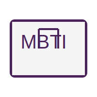

Bible-based MBTI
당신은 하나님의 특별한 작품입니다.
"우리는 그가 만드신 바라" (에베소서 2:10)
하나님께서는 각 사람을 독특한 성품과 재능으로 창조하셨습니다.
본 설문은 MBTI 성격 유형을 통해 자신의 하나님 주신 성향을 발견하고,
신앙생활과 공동체 안에서 어떻게 아름답게 쓰임받을 수 있는지 조명합니다.
“너희는 그리스도 예수 안에서 선한 일을 위하여 지으심을 받은 자니” (에베소서 2:10)
자신의 성품을 이해하고, 하나님께 더 가까이 나아가는 여정을 시작해보세요.